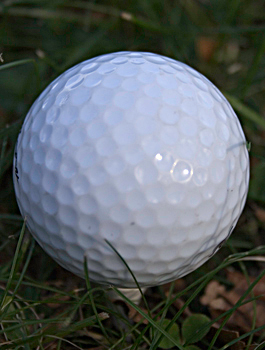
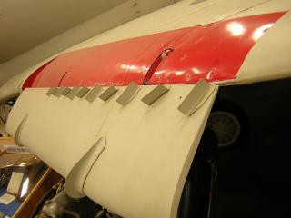

Dimples on Golf Balls
Dimples on golf balls and vortex generators on wings are both designed to induce turbulence in boundary layers.
Dimpled Golf BallCopyright 2007 StockPhotography.com, used with permission
A boundary layer is the layer of fluid (gas or liquid) next to a moving surface (wall) where the fluid transitions from zero velocity at the wall to the free stream velocity away from the wall. By inducing a turbulent boundary layer at an otherwise laminar boundary layer speed (determined by the Reynolds number), the detachment (separation) of the boundary layer from the wall is delayed, thus reducing drag.
Drag force is considered an unavoidable nuisance, always opposing the direction of travel through a fluid. For example small drag decreases in passenger airplanes translate into substantial fuel cost savings, but for golfers...priceless.
If the laminar boundary layer is unlikely to separate, e.g. low speed flow over a wing at low incidence, then inducing a turbulent boundary layer will not reduce drag and will actually increase it.
Flow around a sphere of golf-ball size and moving through the air at golf-ball speed will always separate with or without spin. The combination of the size and speed of a golf ball doesn't allow a turbulent boundary layer to develop naturally. Thus without dimples the laminar boundary layer will separate earlier inducing more drag than the dimpled, and therefore turbulent, version.
Feedback
Questions? Ideas? Problems?

Recent blog posts
- CFD Simulates Distant Past
- Background on the Caedium v6.0 Release
- Long-Necked Dinosaurs Succumb To CFD
- CFD Provides Insight Into Mystery Fossils
- Wind Turbine Design According to Insects
- Runners Discover Drafting
- Wind Tunnel and CFD Reveal Best Cycling Tuck
- Active Aerodynamics on the Lamborghini Huracán Performante
- Fluidic Logic
- Stonehenge Vortex Revealed as April Fools' Day Distortion Field
 Get our Blog feed
Get our Blog feed
Comments
Vortex Generators
Vortex generators are shown in the image below on the the trailing edge of the deployed slat (immediately in front of the red region).
Vortex Generators1956 Douglas A4D-1 Skyhawk
Spinning Ball Aerodynamics
Find out more about spinning ball aerodynamics.
Lancer Evo Vortex Generators
Vortex generators have recently appeared on the Lancer Evo, mounted along the rear of the roof. AutoSpeed documents the thinking and data that led to the vortex generators on the Evo, which are claimed to reduce drag and increase downforce.
vg's on the aft section of a slat
1. Excellent photo of the vg's on the slat. The slats on my wing were stalling much earlier than the wing itself. This caused a large nose down pitch change because of the distance they are forward on the wing. I installed vg's on the slats to cure this but put them much further forward on the slat to address the stall spanwise, before it occured. What aircraft were these installed on? And why were they installed so far aft?
2. Are the 2 projections on the leading edge vortilons?
Jonny Olson arcticfab@yahoo.com
Vortex Generator Details
The vortex generators shown in the image are those of a 1956 Douglas A4D-1 Skyhawk at the New England Air Museum.
I wonder if the vortex generators are for the main wing rather than the slat?
I would guess the 2 projections are wing fences rather than vortilons.
vg's & vortilons
Thanks for your response. And greetings from Oliktok Point Long
Range Radar Station, 60 miles nw of Prudhoe Bay Alaska. Normally the slat and its higher speed air that is exiting from the gap between it and the wing, is what is used to delay the wings stall. Having vg's on the aft section of the slat would seemingly cause a mixing of the slower speed air on top of the slat with the very high speed air exiting the slat gap (detrimental). This would cause the air exiting the slat gap to vector up away from the wing (detrimental) because the mixing would cause that air to slow down and the pressure to go up.
The wing fences seem to be canted to the chordwise flow of the wing. Maybe it's only symantics but since a "cant" would cause a vortex, wouldn't that would make them vortilons and not just fences which are flow straighters or used to stop spanwise flow?
have a good day, jonny o
Dimples-A necessity
Your post clearly indicates that dimples on golf balls are necessary to reduce the drag.Your post has opened my eyes and I was under the wrong impression that dimples are a nuisance for golfers.
More Golf Aerodynamics
You can find more golf aerodynamics at "Aerodynamic Golf Clubs."
vg's and vortilons.
The vg's on the Skyhawk wing slats are in line with another row of vg's in front of the ailerons. The slats are pushed back in by airflow after takeoff. With these slats and vg's a skyhawk can lift almost its own weight in fuel with its tiny wing. With 2 wing drop tanks and a big belly tank it can carry a total of approx 11,800 lb of fuel. The wing fence like items on the slats are there to catch the barrier netting in the event of a landing gone wrong. On carriers and some land bases a barrier consisting of 2 horizontal cable with vertical straps could be erected by hydraulics or similar to snare the plane. With a swept wing like a Skyhawk there is nothing for the barrier to snag on hence the "barrier catchers". There is another barrier catcher just inboard of the slat on each side of the aircraft.